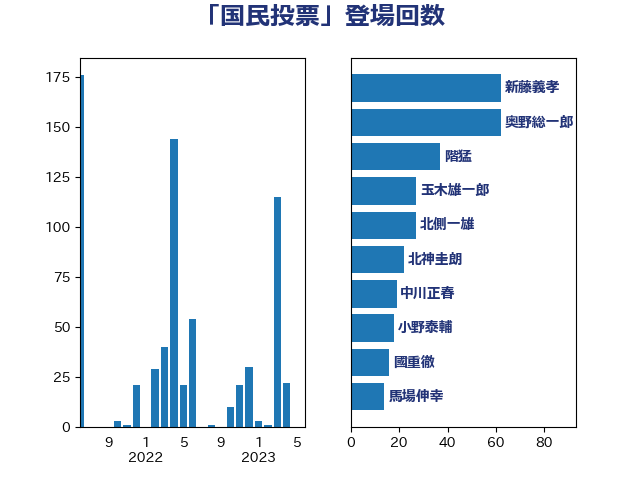

単語「国民投票」

| 奥野総一郎 | 立憲民主党 | 74 回 |
| 新藤義孝 | 自由民主党 | 74 回 |
| 足立康史 | 日本維新の会 | 36 回 |
| 北側一雄 | 公明党 | 30 回 |
| 馬場伸幸 | 日本維新の会 | 29 回 |
| 玉木雄一郎 | 国民民主党 | 22 回 |
| 船田元 | 自由民主党 | 19 回 |
| 逢沢一郎 | 自由民主党 | 19 回 |
| 小西洋之 | 立憲民主党 | 18 回 |
| 松沢成文 | 日本維新の会 | 18 回 |
| 中谷元 | 自由民主党 | 16 回 |
| 國重徹 | 公明党 | 15 回 |
| 山添拓 | 日本共産党 | 15 回 |
| 菅義偉 | 自由民主党 | 14 回 |
| 三木圭恵 | 日本維新の会 | 13 回 |
| 北神圭朗 | 無所属 | 13 回 |
| 杉尾秀哉 | 立憲民主党 | 13 回 |
| 新垣邦男 | 立憲民主党 | 12 回 |
| 大串博志 | 立憲民主党 | 11 回 |
| 大口善徳 | 公明党 | 11 回 |
| 磯崎仁彦 | 自由民主党 | 9 回 |
| 西田実仁 | 公明党 | 9 回 |
| 辻元清美 | 立憲民主党 | 9 回 |
| 階猛 | 立憲民主党 | 9 回 |
| 吉良よし子 | 日本共産党 | 8 回 |
| 小野泰輔 | 日本維新の会 | 8 回 |
| 平木大作 | 公明党 | 8 回 |
| 石井正弘 | 自由民主党 | 7 回 |
| 福島みずほ | 社会民主党 | 7 回 |
| 谷田川元 | 立憲民主党 | 7 回 |
| 本村伸子 | 日本共産党 | 6 回 |
| 石井準一 | 自由民主党 | 6 回 |
| 道下大樹 | 立憲民主党 | 6 回 |
| 山下貴司 | 自由民主党 | 5 回 |
| 森英介 | 自由民主党 | 5 回 |
| 浅田均 | 日本維新の会 | 5 回 |
| 石破茂 | 自由民主党 | 5 回 |
| 赤嶺政賢 | 日本共産党 | 5 回 |
| 伊藤孝江 | 公明党 | 4 回 |
| 吉田宣弘 | 公明党 | 4 回 |
| 打越さく良 | 立憲民主党 | 4 回 |
| 東徹 | 日本維新の会 | 4 回 |
| 矢倉克夫 | 公明党 | 4 回 |
| 林芳正 | 自由民主党 | 3 回 |
| 柴山昌彦 | 自由民主党 | 3 回 |
| 柴田巧 | 日本維新の会 | 3 回 |
| 盛山正仁 | 自由民主党 | 3 回 |
| 石川大我 | 立憲民主党 | 3 回 |
| 藤田文武 | 日本維新の会 | 3 回 |
| 近藤昭一 | 立憲民主党 | 3 回 |
| 野田聖子 | 自由民主党 | 3 回 |
| 高木かおり | 日本維新の会 | 3 回 |
| 中川正春 | 立憲民主党 | 2 回 |
| 古屋圭司 | 自由民主党 | 2 回 |
| 寺田学 | 立憲民主党 | 2 回 |
| 山下芳生 | 日本共産党 | 2 回 |
| 柳ヶ瀬裕文 | 日本維新の会 | 2 回 |
| 甘利明 | 自由民主党 | 2 回 |
| 細田博之 | 自由民主党 | 2 回 |
| 舟山康江 | 国民民主党 | 2 回 |
| 鬼木誠 | 立憲民主党 | 2 回 |
| 下村博文 | 自由民主党 | 1 回 |
| 二階俊博 | 自由民主党 | 1 回 |
| 井上哲士 | 日本共産党 | 1 回 |
| 原口一博 | 立憲民主党 | 1 回 |
| 古川禎久 | 自由民主党 | 1 回 |
| 古賀友一郎 | 自由民主党 | 1 回 |
| 吉田はるみ | 立憲民主党 | 1 回 |
| 宮崎政久 | 自由民主党 | 1 回 |
| 小宮山泰子 | 立憲民主党 | 1 回 |
| 山田賢司 | 自由民主党 | 1 回 |
| 山谷えり子 | 自由民主党 | 1 回 |
| 有村治子 | 自由民主党 | 1 回 |
| 浜地雅一 | 公明党 | 1 回 |
| 浜野喜史 | 国民民主党 | 1 回 |
| 浦野靖人 | 日本維新の会 | 1 回 |
| 舞立昇治 | 自由民主党 | 1 回 |
| 茂木敏充 | 自由民主党 | 1 回 |
| 蓮舫 | 立憲民主党 | 1 回 |
| 赤池誠章 | 自由民主党 | 1 回 |
| 音喜多駿 | 日本維新の会 | 1 回 |